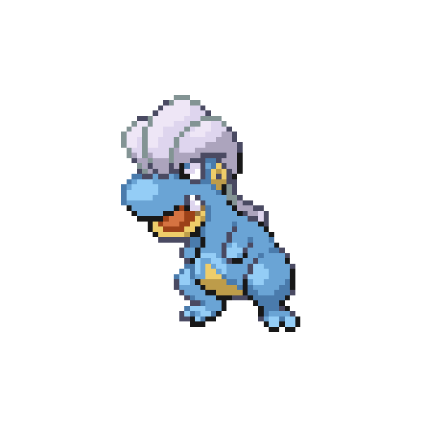

Life exists on a continuum, not a binary. I've fallen into believing that it is a binary for much of mine. Two poles—being on track towards my best life or being broken. Such dichotomy has lead to despair. If I'd messed up a little bit, then I was broken. And if I was broken then I may as well enjoy being broken. Furthermore, the only way to not be broken (at least temporarily) was to have one final hurrah: a grand, epic assurance that I would never return to being broken again. Loathing myself all the while. On the other side, the pressure of perfection weighed insurmountably on me; after all, if I slipped up even a bit, I would have to go through the long haul of being broken and escaping it. So perhaps, I would think, will I ever succeed? Why not just slip up right now?